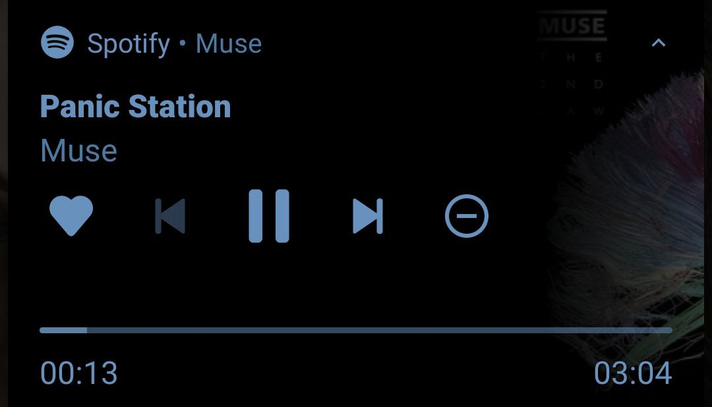

Hi, I'm Irina. I was born in Moscow, in 2008.
At the age of 6 moved to Minsk.
Was a student with the best grades in school.
In 2022 moved to Ireland.
My interests
Hiking
One of my interests is hiking, and not only because of picturesque views. It also can be a perfect workout.
Diving
I was doing diving for 3 years, and it became a big part of my life. Sometimes it looks so easy, but it's actually not. There are a lot of rules of safety in it.
Sport is really good for mental health, because it makes people feel happier.
Music

I like to listen to rock music, because it,s emotional, and sounds really good.
Old songs for me are the work of art because of their fantastic atmosphire.
I enjoy listening to Ukrainian or Russian music, because I can fully understand the lyrics.
My hobbies
The main hobby is art, mostly using only black pan.
Often inanimate objects as things to draw.
Other hobbies are knitting, needlework.
Also different sports.